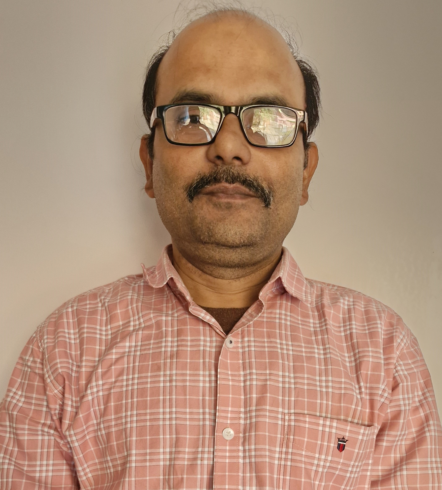

Vidyasagar Bhattacharjee

Objective
I'm determined to keep evolving as a teacher as I want to help learners' minds grow.
Education
- Secondarty School (WBBSE): 10th standard with 71.8%,
- Senior-secondary School (WBCHSE): 12th standard (science stream) with 64.8%,
- Engineering:
- Bachelors of Mechanical Engineering (Jadavpur University) with 61.2%,
- Master of Technology, Design & Production (NIT Durgapur) with 71.3%.
Skills
- Computer aided Tool Engineering: Auto-Cadd, Pro-E, Ansys, Catia, Mastercam, Reverse Engineering,
- Research Work: Matlab Programming, Latex writing,
- Web development programming: Python,
- Operating System: Windows.
Work Experience
-
Production engineer - Graphite India Limited, Durgapur
April 2004 - June 2008
- Shift operation of graphite electrodes production,
- Preparing firing sheets of furnaces,
- Research and development of graphatized products.
-
Assistant Professor (Mechanical Engineering) - NHIT, Durgapur
July 2006 - Till date
- Teaching of mechanical engineering subjects (Diploma & B.Tech),
- Rendering academical administrative services,
- Writing and editing engineering study materials.
Achievements and Certifications
- Ranked 220 in WBJEE (1997),
- Enlisted as a member in Institution of Engineers, India.
Other Information